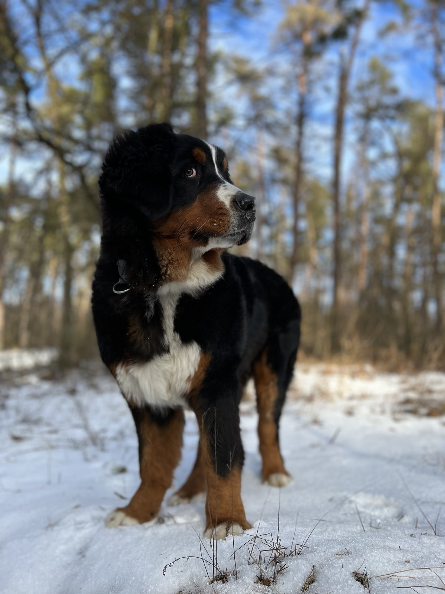
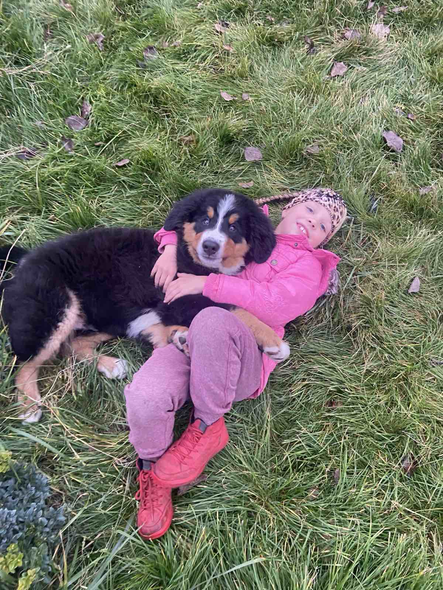
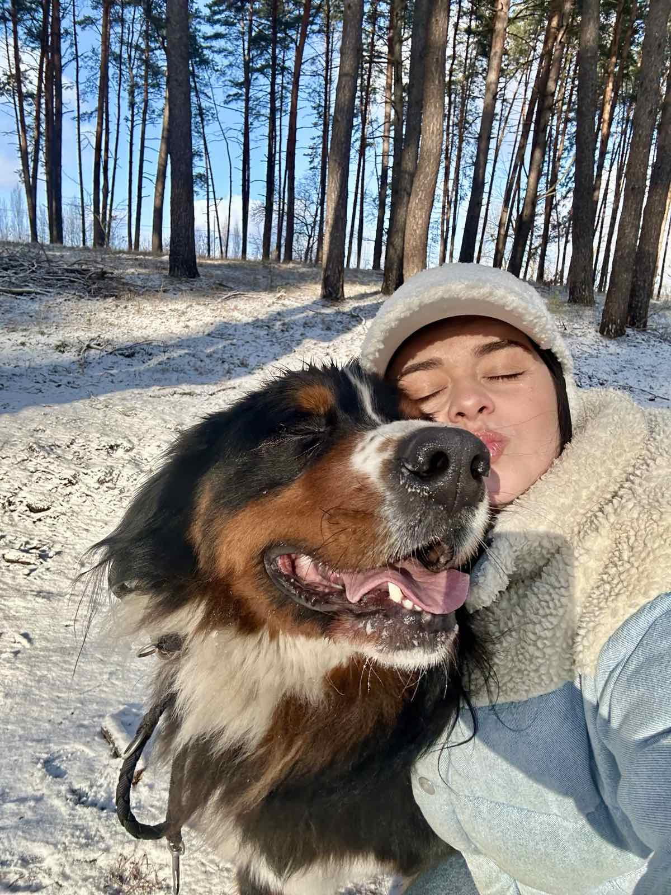

Мій пес Армані - плюшевий велетень із добрим сердцем.

Чому саме бернський зенненгунд?
Мене звати Олена. Обожнюю пухнастих друзів всім своїм серцем, проте ще більше за мене їх обожнює моя дочка Аліса. Місяці вмовлянь, мрійливих очей і чарівних «будь ласка»… і так, ми вирішили подарувати їй — і, чесно кажучи, й собі — собаку.Але не будь-якого! Хотілося когось великого, доброго, з плюшевими лапами та серцем розміром із будинок. Так в наше життя увійшов Армані — бернський зенненгунд, справжній велетень з характером котика. Він ідеально підходить для дітей: терплячий, ніжний і завжди готовий до обіймів або пригод.Тепер у нас вдома не просто собака, а повноцінний друг, нянька, компаньйон і пухнаста антистрес-терапія. І так — ми вже не уявляємо, як жили без нього.

Що треба знати про цю породу?
А це ті самі «ведмеді на повному серйозі»! Величезні, пухнасті, добрі й дуже харизматичні пси родом зі Швейцарії.
Чим вони класні?
Виглядають, ніби можуть охороняти замок, але бояться пилососа.
Їдять усе. Особливо, якщо ти відвернувся.
Уміють спати на півдивані, решту залишивши для тебе (жартую, ні).
Мають вигляд мудрого старця, але мозок щеняти до 5 років.
Люблять дітей більше, ніж іграшки. І це правда.

А як же з’явилося ім’я Армані?
Все просто й водночас чарівно! У той час Аліса якраз зачитувалась книжкою Бодо Шефера «Про Мані» — історією про собаку, яка допомогла дівчинці навчитися мріяти, вірити в себе та досягати цілей. Це була її улюблена книга, майже настільна.
І от, коли настав той хвилюючий момент — обирати ім’я для нашого щеняти, ми дізналися, що за умовами заводчика ім’я має починатися з літери «А». І тут у нас усіх засяяли очі! Ми взяли частинку улюбленого “Мані”, додали потрібне “А” — і з’явився він: АрМані. Начебто вигадане навмисне, з ноткою стилю, тепла й пам’яті про книгу, яка надихала Алісу.Так в ім’я нашого хвостатого друга вплелася історія маленької мрії, велика любов і краплинка долі

Контакти
Фото